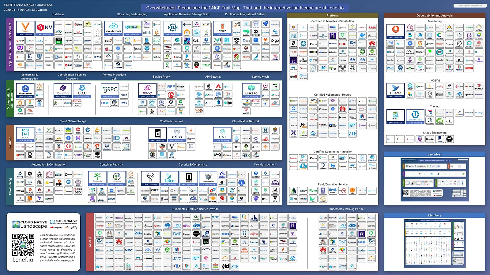
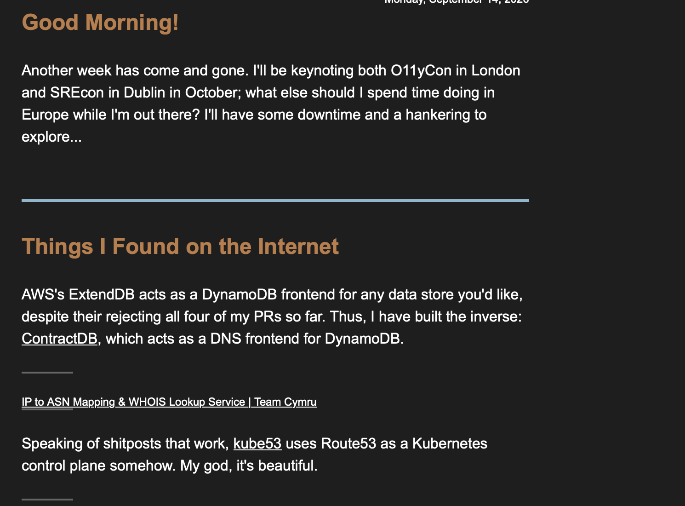
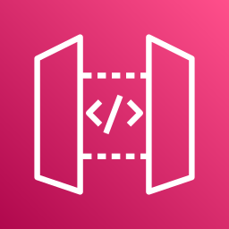

kube53 - Kubernetes on Route53
kube53 🤠☁
Kubernetes. On Route53.
Yannick van Rooyen · cirrostratus.cloud
Lightning talk
About me
- Yannick van Rooyen
- 20+ years in IT, 10+ years cloud
- Freelance since 2024
- 5 years AWS Community Builder
Today
Building kube53 with AWS primitives
But first: a quick reminder of what Route53 and Kubernetes are
Kubernetes
The most complicated and expensive answer to "I need to run a container"
- Also the standard for container workloads
- Often not the right answer: complexity, especially for simple workloads on AWS

DNS and Route53
Browser"where is amazonaws.com?"
→
Resolver"ask .com"
→
.comauthoritative zone: "ask Route53"
→
Route53"amazonaws.com is at 6.66.6.66"
Route53 answers from a list of records the owner configured.
Route53 is a database
- A list of records: type, name, value
- A highly available key-value database, replicated globally
- So people joke with it:
- Route53Files: a filesystem on Route53
- Dyna53: DynamoDB on Route53
AWS primitives
Small, single-purpose building blocks. Everything bigger on AWS is made of these.
- Route53: DNS records
- Lambda: run a function on demand
- API Gateway: public HTTPS front door for a Lambda
- EventBridge: events and schedules
- ECS / Fargate + ALB: run containers behind a load balancer
Enter kube53!
As featured in Corey Quinn's Last Week in AWS

The plan
- K8s = most complicated and expensive answer to "run a container"
- Trick people into thinking they run k8s
- ...while misusing Route53
- ...and running it in ECS, where it belongs
How it works
kubectl thinks it talks to a Kubernetes API server- API Gateway + Lambda replicate the Kubernetes API and store the request as TXT records in Route53 (our "etcd")
- EventBridge triggers the reconciler Lambda every minute
- The reconciler reads the desired state from Route53 and deploys it as ECS + ALB
kubectl apply
→
API GW + Lambda
→
Route53
→
Reconciler
→
ECS + ALB
etcd: the brain of Kubernetes
- etcd = a highly available key-value store
- Holds all cluster state: every Deployment, Service, Pod spec
- Only the API server talks to it
- Sounds a lot like Route53, right?
etcdkey → value
=
Route53name → TXT record
Architecture
You talk to the "Kubernetes API"

kubectl
apply / get→

API Gateway
HTTPS front door→

Lambda
fake apiserver→
Route53TXT records = etcd
The control loop makes it real (reads desired state from Route53)
EventBridgeevery minute
→
Lambda
reconciler→
ECS / Fargatepods
→
ALBservices / ingress
Don't use this in production
But why?
- With AI it's easy to deploy anything: a DNS record or a full k8s cluster
- The gap: we no longer understand what we deploy
- Playing with primitives (Route53, Lambda, EventBridge) builds that understanding
- Better understanding = better prompts
- Playing around with something popular like k8s teaches even more
Takeaway
- Everybody can tell an AI to run a container on Kubernetes
- Knowing if that's a good idea is where our value as engineers is
- But having fun while learning is the most important thing
Thanks!
kube53 GitHub repo
github.com/cirrostratuscloud/kube53
My website
cirrostratus.cloud
LinkedIn
in/yannickvanrooyen